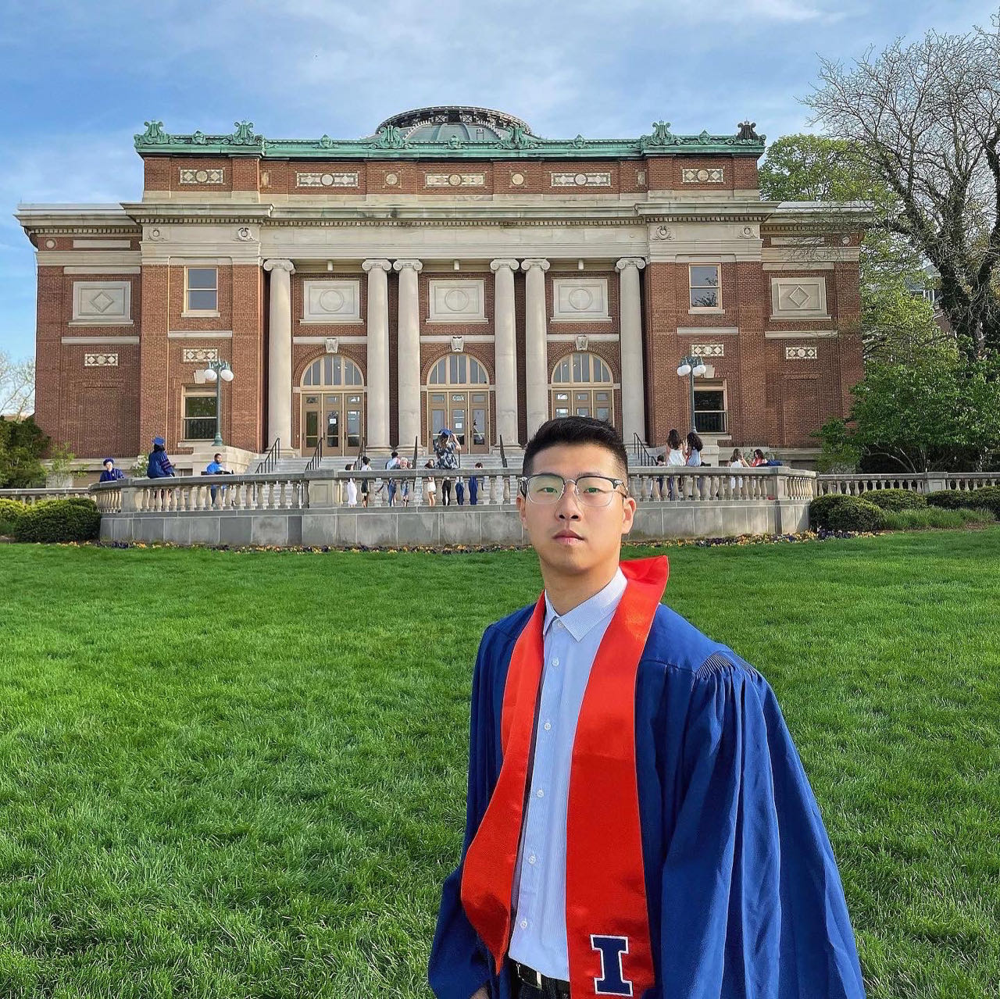

I am currently a master of Financial Engineering student at Cornell University.
I hold a B.S. degree in mathematics.
I have laid a comprehensive foundation for myself when it comes to dealing with future challenges in financial engineering studies and research.
Calculus and Abstract Linear Algebra have both engendered within me a fuller picture of modern mathematics and have shown me how to analyze the problem with quantitative and scientific methods; they have lifted the curtain behind the magic act that is mathematics.
Statistical Analysis and Probability Theory have brought me from the real world to the probability world to teach me that everything has its chance to occur, which helped me evaluate the actions logically when making decisions and opened my eyes to endless possibilities.
Contact Information:
Email: ty325 at cornell dot edu
Campus Address: 112 Valentine Pl. Ithaca, NT 14850